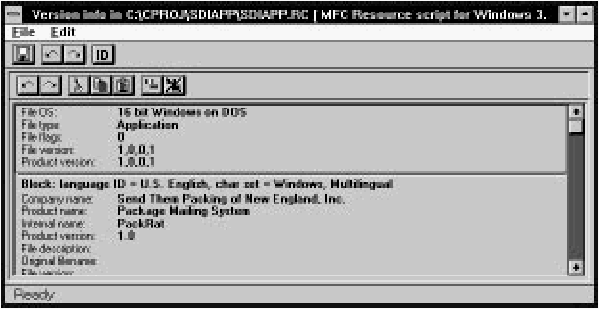
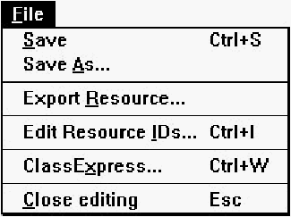
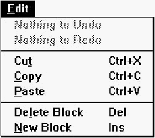
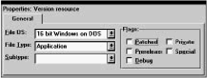
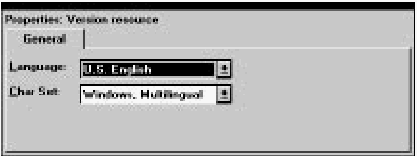
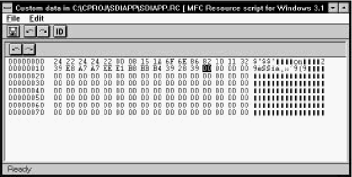
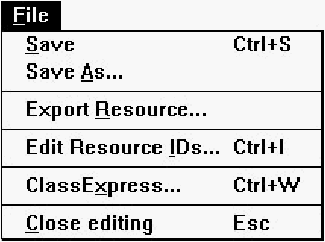
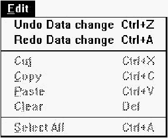
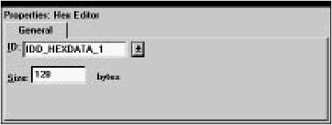

Home
| Search
| CTG
| RTL
| IDDE
| STL
Home
| Search
| CTG
| RTL
| IDDE
| STL
Last update Fri Apr 28 16:30:17 2006
|
Reference 1. Introducing Digital Mars C++ 2. Introducing the IDDE Part 2: Creating an Application with Digital Mars C++ 3. Starting a Project and Defining Workspaces 4. Generating an Application Framework 5. Defining Classes and Their Hierarchies 6. Editing Program Code 7. Adding Look and Feel with Resources 8. Testing an Application Part 3: Learning Digital Mars C++ by Example 9. Introduction to the Tutorial 10. Lesson 1: Create the DOS Application 11. Lesson 2: Generate an Application Framework 12. Lesson 3: Customize the Interface 13. Lesson 4: Add Messages with ClassExpress 14. Lesson 5: Add a Dialog Box with ClassExpress Part 4: More about Creating Programs 15. More about Projects and Workspaces 16. More about Project Build Settings 17. More about AppExpress 18. More about ClassExpress 19. Class Editor Reference 20. Hierarchy Editor Reference 21. Text Editor Reference 22. Using Version Control Part 5: More about Testing Programs 23. Controlling and Configuring the Debugger 24. Commands Available in Debugging Mode Part 6: About Managing Resources 25. ResourceStudio Resource Editor 26. Dialog Editor 27. Menu, Accelerator and String Table Editors 28. Bitmap, Cursor, Icon, and Font Editors 29. Version Information and Custom Resource Editors Part 7: Appendixes A. Expression Evaluation B. IDDE Settings and Command-Line Options C. Using NetBuild |
29. Version Information and Custom Resource EditorsThis ResourceStudio reference chapter contains details about the commands and options found in the Version Information editor and the Custom Resource editor. For an introduction to ResourceStudio, see Chapter 7, "Adding Look and Feel with Resources."Version Information EditorThe Version Information editor (see Figure 29-1) is used to edit version information resources. [Figure 29-1 The Version Information editor A version information resource consists of a header and one or more blocks of variable information. The Version Information editor displays the resource as a scrolling list of information, with the header information at the top of the list and the blocks of variable information below. Most data can be edited directly in the list; click on an item, and the data appears in a textbox, ready for editing. File menu commandsThe File menu (see Figure 29-2) contains commands to save the resource file, to edit resource IDs, and to perform other miscellaneous functions. [Figure 29-2 Version Information editor File menu SaveSaves the resource file. If the file is unnamed, this command executes Save As.Save AsOpens a Windows File Save As dialog box, which can be used to save the resource file under a new name.Edit Resource IDsOpens the Resource ID Browser dialog box, used to browse and modify resource IDs. For more information about managing resource IDs and using the Resource ID Browser dialog box, see "Managing Resource IDs," in Chapter 7, "Adding Look and Feel with Resources."ClassExpressRuns ClassExpress, passing the filename of the resource file as the project that ClassExpress should open. This command is only enabled if the Version Information editor is running in the right pane of the Browser window.Close EditingCloses the Version Information editor.Edit menu commandsThe Edit menu (see Figure 29-3) contains standard editing commands. You can undo operations, and can cut, copy, paste, delete, and add variable information blocks. [Figure 29-3 Version Information editor Edit menu UndoUndoes the last Version Information editor operation.RedoRedoes the last undone Version Information editor operation.CutCopies the current variable information block to the Clipboard, then deletes the variable information block from the version information resource. Note that a version information resource must contain at least one variable information block, so the last one cannot be cut.CopyCopies the current variable information block to the Clipboard.PasteCopies the variable information block in the Clipboard to the version information resource.Delete BlockDeletes the current variable information block from the version information resource. Note that a version information resource must contain at least one variable information block, so the last one cannot be deleted.New BlockAdds a new variable information block to the version information resource.Toolbar commandsThe Version Information editor toolbar (see Figure 29-4) provides quick access to frequently used menu commands.
[Figure 29-4 Version Information editor toolbar
Header propertiesProperties of the version information resource header are shown in Figure 29-5. [Figure 29-5 Header properties Block propertiesProperties of the version information variable information block are shown in Figure 29-6. [Figure 29-6 Block properties Custom Resource EditorThe Custom Resource editor (or Hex editor) is shown in Figure 29-7. [Figure 29-7 The Custom Resource editor Custom resources are created by choosing New Other from the Browser window's Resource menu. Custom resources are edited as hexadecimal data. The size of the custom resource is set in the Property Sheet. File menu commandsThe File menu (see Figure 29-8) contains commands to save the resource file, to edit resource IDs, and to perform other miscellaneous functions. [Figure 29-8 Custom Resource editor File menu SaveSaves the resource file. If the file is unnamed, this command executes Save As.Save AsOpens a Windows File Save As dialog box, which can be used to save the resource file under a new name.Edit Resource IDsOpens the Resource ID Browser dialog box, used to browse and modify resource IDs. For more information about managing resource IDs and using the Resource ID Browser dialog box, see "Managing Resource IDs," in Chapter 7, "Adding Look and Feel with Resources."ClassExpressRuns ClassExpress, passing the filename of the resource file as the project that ClassExpress should open. This command is only enabled if the Custom Resource editor is running in the right pane of the Browser window.Close EditingCloses the Custom Resource editor.Edit menu commandsThe Edit menu (see Figure 29-9) contains commands to undo data changes and to redo undone changes. [Figure 29-9 Custom Resource editor Edit menu UndoUndoes the last data change in the Custom Resource editor.RedoRedoes the last undone data change in the Custom Resource editor.Toolbar commandsThe Custom Resource editor toolbar (see Figure 29-10) provides quick access to the undo and redo commands.
[Figure 29-10 Custom Resource editor toolbar
Custom resource propertiesCustom resource properties are shown in Figure 29-11. [Figure 29-11 Custom resource properties IDSpecifies the resource ID.SizeSpecifies the size of the custom resource in bytes. |